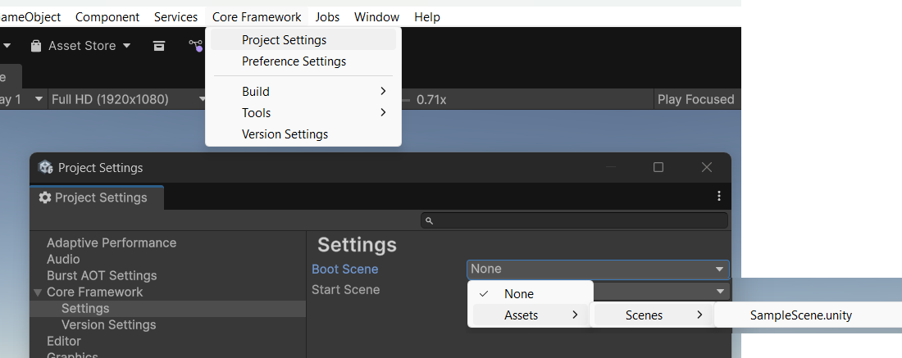

CoreFrameworkProjectSettings
Source: ./Editor/Settings/CoreFrameworkProjectSettings.cs
Overview
CoreFrameworkProjectSettings holds project-wide (team-shared) settings that the editor serializes and commits with your project. These values appear under:
Edit → Project Settings → Core Framework → Settings
They are used to declare the Boot Scene and Start Scene for the project. On editor load, CoreFrameworkSettingInitialization copies these values into the runtime static container CoreFrameworkSettings. The Bootstrapper then reads those values to handle scene loading at startup.

Fields
Boot Scene — Name of the boot scene to load first.
If set toNoneor empty, no boot scene is loaded.Start Scene — Name of the game start scene.
If set toNoneor empty, the start scene is not loaded by the bootstrap sequence.
Scenes should be added to File → Build Settings… so Unity can load them by name at runtime.
How it flows
- You choose scenes in Project Settings → Core Framework → Settings.
- On editor load,
CoreFrameworkSettingInitializationmirrors them into the runtime statics:CoreFrameworkSettings.BootSceneCoreFrameworkSettings.StartScene
- At application start,
Bootstrapperreads those values and loads scenes.
Snippet: runtime statics (for reference)
public static class CoreFrameworkSettings
{
public static string StartScene = "None";
public static string BootScene = "None";
public static bool ShowDebug;
public static int InfoSize = 14;
public static int WarningSize = 15;
public static int ErrorSize = 16;
}
Snippet: how Bootstrapper uses them
[RuntimeInitializeOnLoadMethod(RuntimeInitializeLoadType.BeforeSceneLoad)]
private static void Init()
{
#if UNITY_EDITOR
var currentlyLoadedEditorScene = SceneManager.GetActiveScene();
#endif
if (!string.IsNullOrWhiteSpace(CoreFrameworkSettings.BootScene) &&
!string.Equals(CoreFrameworkSettings.BootScene, "None", StringComparison.Ordinal))
{
if (!SceneManager.GetSceneByName(CoreFrameworkSettings.BootScene).isLoaded)
{
#if UNITY_EDITOR
SceneManager.UnloadSceneAsync(currentlyLoadedEditorScene);
#endif
SceneManager.LoadScene(CoreFrameworkSettings.BootScene);
}
}
#if UNITY_EDITOR
// In the Editor, reopen the scene you had loaded, additively.
SceneManager.LoadSceneAsync(currentlyLoadedEditorScene.name, LoadSceneMode.Additive);
#else
// In a built player, optionally load the Start Scene additively.
if (!string.IsNullOrWhiteSpace(CoreFrameworkSettings.StartScene) &&
!string.Equals(CoreFrameworkSettings.StartScene, "None", StringComparison.Ordinal) &&
!SceneManager.GetSceneByName(CoreFrameworkSettings.StartScene).isLoaded)
{
SceneManager.LoadSceneAsync(CoreFrameworkSettings.StartScene, LoadSceneMode.Additive);
}
#endif
}
Usage Notes
Editor vs Player behavior
- Editor: the current scene is unloaded, Boot Scene is loaded, then the original scene is added back additively so you can keep working.
- Player: Boot Scene loads first; if a Start Scene is set, it loads additively afterward.
Scene names must match the asset names and be present in Build Settings.
Team-wide: these settings are serialized and should be committed to VCS so everyone shares the same startup flow.